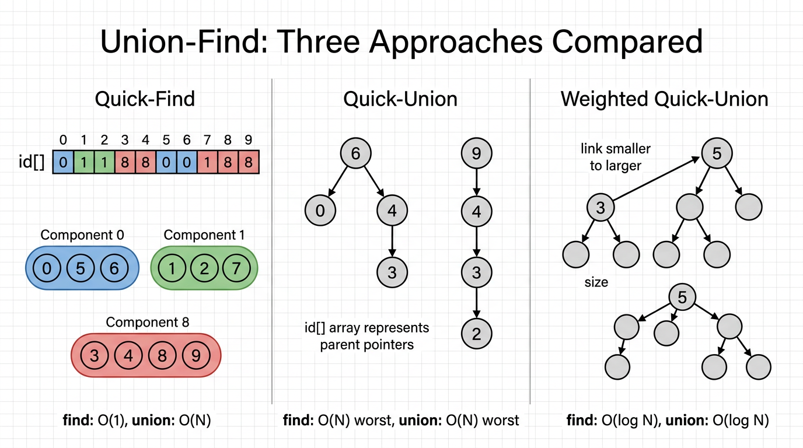

Union-Find — COMP0005 Algorithms¶
Lecture-style notes. Union–Find is often one of the first topics: it introduces a clean problem → model → data structure → complexity → refine workflow that repeats through the course.
1. COMPLETE TOPIC SUMMARIES¶
The Union–Find problem¶
You are given an undirected graph with \(N\) nodes (often labelled \(0, 1, \ldots, N-1\)). Initially there are no edges. You must support two operations:
union(x, y)— add an (undirected) connection between \(x\) and \(y\) (conceptually: “merge their connectivity”).find(x, y)(equivalently: “are \(x\) and \(y\) connected?”) — return whether there is a path between \(x\) and \(y\) using the edges added so far.
Intuition: Think of islands and bridges.
unionbuilds bridges;findasks whether you can walk from one island to the other using existing bridges.
Step 1 — Modelling the problem¶
- Nodes as integers: represent vertices as \(\{0,\ldots,N-1\}\) so arrays index directly.
- “Connected by a path” (after a sequence of unions) is an equivalence relation on vertices:
- Reflexive: every node is connected to itself.
- Symmetric: if there is a path \(x \leadsto y\), there is a path \(y \leadsto x\) (undirected edges).
- Transitive: if \(x\) connects to \(y\) and \(y\) connects to \(z\), then \(x\) connects to \(z\).
- Connected components: partition the nodes into maximal sets where every pair in the same set is connected. Two nodes satisfy
find(x, y) == trueiff they lie in the same component. union(x, y)merges the two components containing \(x\) and \(y\) (if they are already the same, merging is a no-op).
This model is what lets us replace “graph reachability” with “same set / same component” — the algorithmic task becomes maintaining a partition under merges and same-set queries.
Step 2 — Quick-Find (eager approach)¶
Data structure: an integer array id[0..N-1].
Meaning: id[i] is the component id (a label) for node \(i\).
Connection test: \(u\) and \(v\) are connected iff id[u] == id[v].
Operations:
find(u, v): compare two array entries → \(\mathcal{O}(1)\) time.union(u, v): every node \(i\) that used to be in \(u\)’s component must be relabelled to \(v\)’s component:- scan \(i = 0..N-1\); if
id[i] == id[u], setid[i] = id[v]→ \(\mathcal{O}(N)\) time.
Pseudocode:
# init: each node is its own component
id = []
for i in range(N):
id.append(i)
def union(u, v):
uid = id[u]
vid = id[v]
for i in range(N):
if id[i] == uid:
id[i] = vid
def find(u, v):
return id[u] == id[v]
Costs (per operation, unless stated otherwise):
| Phase | Time |
|---|---|
| Init | \(\Theta(N)\) (build array) |
union |
\(\mathcal{O}(N)\) |
find |
\(\mathcal{O}(1)\) |
Why this can fail at scale: \(N\) unions each costing \(\mathcal{O}(N)\) gives \(\mathcal{O}(N^2)\) total work — too slow when \(N\) is large. The eager update makes merges expensive to keep queries cheap.
Step 2 — Quick-Union (lazy approach)¶
Data structure: still id[0..N-1], but the meaning changes.
Meaning: id[i] is \(i\)’s parent in a forest (a collection of rooted trees). Roots satisfy id[r] == r.
Root: root(i) walks \(i \to id[i] \to id[id[i]] \to \cdots\) until it reaches a root.
Connection test: \(u\) and \(v\) are connected iff root(u) == root(v) (same tree ⇔ same component).
Operations:
find(u, v): two root walks → cost dominated by tree depth.union(u, v): attach one root under the other:id[root(u)] = root(v)(or the symmetric choice).
Pseudocode:
def root(i):
while i != id[i]:
i = id[i]
return i
def find(u, v):
return root(u) == root(v)
def union(u, v):
r_u = root(u)
r_v = root(v)
id[r_u] = r_v
Costs:
| Phase | Time |
|---|---|
| Init | \(\Theta(N)\) |
union |
\(\mathcal{O}(N)\) in the worst case (deep trees) |
find |
\(\mathcal{O}(N)\) in the worst case |
Core issue: without care, trees can become long chains (essentially linked lists), so root becomes linear time. Quick-Union makes merges cheap locally, but can create bad global shape.
Step 2 — Weighted Quick-Union¶
Idea: when merging two trees, always hang the smaller tree under the larger tree’s root (by number of nodes in each tree). This controls height.
Extra array: size[i] — for a root \(i\), the number of nodes in the tree rooted at \(i\). For non-roots you may ignore size[i] in simple implementations (only roots must stay meaningful), but the lecture pattern is: maintain sizes at roots and update on merge.
find: unchanged in spirit — still compare roots.
union:
r_u = root(u),r_v = root(v); if equal, return.- If
size[r_u] < size[r_v], setid[r_u] = r_vandsize[r_v] += size[r_u]; else the symmetric case.
Pseudocode:
id = []
size = []
for i in range(N):
id.append(i)
size.append(1)
def union(u, v):
r_u = root(u)
r_v = root(v)
if r_u == r_v:
return
if size[r_u] < size[r_v]:
id[r_u] = r_v
size[r_v] += size[r_u]
else:
id[r_v] = r_u
size[r_u] += size[r_v]
Costs (standard bound for this version, without extra optimisations):
| Phase | Time |
|---|---|
| Init | \(\Theta(N)\) |
union |
\(\mathcal{O}(\log N)\) |
find |
\(\mathcal{O}(\log N)\) |
Why \(\log N\) shows up (high-level): a node’s tree can at most double in size when it becomes a non-root child of a strictly larger tree; you can relate this to a “how many times can my component size at least double?” argument, yielding a logarithmic depth bound.
Course note: Later you may see path compression and union by rank, which tighten amortised bounds further. For COMP0005’s first pass, weighted union + logarithmic depth is the main “shape control” lesson.
Algorithm development cycle (recap — how the course thinks)¶
- Model the problem (objects, operations, mathematical structure — here: equivalence classes / components).
- Choose data structures and algorithms that implement the operations.
- Analyse correctness and cost (often worst-case per operation, sometimes totals for sequences).
- Iterate — if too slow or too complex, refine (Quick-Find → Quick-Union → Weighted Quick-Union is a textbook iteration).
Union–Find is a small, self-contained example of that loop.
Cost summary table¶

{kind=link}
| Algorithm | Init | union |
find |
|---|---|---|---|
| Quick-Find (eager) | \(N\) | \(N\) | \(1\) |
| Quick-Union (lazy) | \(N\) | \(N\)† | \(N\)† |
| Weighted Quick-Union | \(N\) | \(\log N\) | \(\log N\) |
† Worst case for Quick-Union (bad union sequence creates tall trees).
(Big-\(\mathcal{O}\) notation is used for growth rates; init is \(\Theta(N)\) to allocate and initialise arrays.)
2. EXAM-STYLE QUESTIONS (3–5 with model answers)¶
Q1 — Definitions¶
Question: Define connected components in an undirected graph built incrementally by union operations. Explain why “\(x\) is connected to \(y\)” is an equivalence relation.
Model answer: A connected component is a maximal subset of vertices such that for any two vertices \(a, b\) in the subset, there exists a path between them using edges added so far, and no vertex outside the subset can be added without breaking maximality. The relation \(x \sim y\) iff \(x\) is connected to \(y\) is reflexive (empty path), symmetric (undirected paths reverse), and transitive (concatenate paths), hence an equivalence relation. Components are exactly the equivalence classes of \(\sim\).
Q2 — Quick-Find complexity¶
Question: In Quick-Find, what are the time complexities of find and union? Give a sequence of operations illustrating why union can be \(\mathcal{O}(N)\).
Model answer: find is \(\mathcal{O}(1)\) (two array lookups and a comparison). union scans all \(N\) entries to relabel one entire component, so it is \(\mathcal{O}(N)\). Example: if component ids are integers and many nodes share id == 0, a union that relabels all those nodes to another id must touch each of those nodes once — linear work.
Q3 — Quick-Union failure mode¶
Question: Explain how Quick-Union can degrade so that root(i) takes \(\Theta(N)\) time. What structural feature of the forest causes this?
Model answer: If unions always attach the current root as a child of the other root in an unfortunate order, the forest can become a chain (each node has one child in a line). Then reaching the root from a leaf requires walking \(\Theta(N)\) parent pointers. The issue is unbalanced tree height (linear depth), not the parent-pointer idea itself.
Q4 — Weighted union rule¶
Question: State the weighted union rule. Why does linking the smaller tree under the larger tree’s root help?
Model answer: Maintain size[r] for each root \(r\). On union, find roots r_u, r_v; if size[r_u] < size[r_v], set id[r_u]=r_v and update size[r_v], else symmetrically. This ensures the depth of nodes in the smaller tree increases by 1 while attaching into a tree that already had at least as many nodes, preventing repeated “grow a tall skinny tree” behaviour. A standard consequence is a logarithmic upper bound on tree height, making root \(\mathcal{O}(\log N)\).
Q5 — Compare trade-offs¶
Question: Compare Quick-Find and Quick-Union in terms of which operation is expensive and why. Where does Weighted Quick-Union sit in that trade-off?
Model answer: Quick-Find makes union expensive (\(\mathcal{O}(N)\) global relabelling) but find cheap (\(\mathcal{O}(1)\)). Quick-Union makes union cheap (\(\mathcal{O}(1)\) pointer change at roots, ignoring the cost of finding roots) but allows find/root-finding to degrade to \(\mathcal{O}(N)\) if trees degenerate. Weighted Quick-Union keeps the cheap-linking idea but controls tree shape, so both union and find (via root walks) become \(\mathcal{O}(\log N)\) in the standard analysis taught at this stage — a more balanced compromise for long sequences of operations.
3. MUST-KNOW KEY POINTS¶
- Union–Find supports dynamic connectivity: add edges (
union) and test reachability (find). - Model connectivity as equivalence classes → connected components.
- Quick-Find:
id[i]is a component label;find\(\mathcal{O}(1)\),union\(\mathcal{O}(N)\). - Quick-Union:
id[i]is a parent; same component ⇔ same root; worst case linear depth. - Weighted Quick-Union: merge smaller tree into larger tree using
size[]; typical depth bound \(\mathcal{O}(\log N)\) →find/union\(\mathcal{O}(\log N)\) (with the usual root-walk union implementation). - Know the algorithm development cycle: model → implement → analyse cost → refine.
- Memorise the comparison table pattern: init \(\Theta(N)\) for array initialisation; per-op costs as in the table.
4. HIGH-PRIORITY TOPICS¶
| Priority | Topic | Why it matters |
|---|---|---|
| 🔴 Must know | Problem statement: union / find |
Defines what you are implementing and analysing. |
| 🔴 Must know | Equivalence relation + components | Explains why the array/forest models are valid. |
| 🔴 Must know | Quick-Find vs Quick-Union meaning of id[] |
Classic exam trap: same array, different semantics. |
| 🔴 Must know | Per-operation costs + summary table | Core complexity literacy for the course. |
| 🟡 Important | Why Quick-Union can be \(\mathcal{O}(N)\) | Shows “lazy” updates can still fail without invariants. |
| 🟡 Important | Weighted union rule + size[] updates |
Standard implementation detail and proof sketch anchor. |
| 🟡 Important | Algorithm development methodology | Meta-skill reused in every algorithms topic. |
| 🟢 Useful but lower priority | Proof details of the \(\log N\) height bound | Often asked as “outline the argument” rather than full formal proof. |
| 🟢 Useful but lower priority | Variants: union by rank, path compression | May appear as “extension” reading; not always exam-core in week 1. |
5. TOPIC INTERCONNECTIONS & BIGGER PICTURE¶
- Graphs: Union–Find is connectivity without storing all edges explicitly — useful when edges arrive online or you only care about components.
- Sets and partitions: You are maintaining a partition of \(\{0,\ldots,N-1\}\) under union of blocks — the same abstract structure appears in clustering, Kruskal’s MST algorithm, and network reliability sketches.
- Amortised analysis (later): Path compression + union by rank/weight leads to inverse-Ackermann amortised bounds — a famous “tiny growth rate” story built on the same forest model.
- Trade-offs: The progression eager vs lazy vs balanced lazy mirrors recurring design pressure: local simplicity vs global performance.
- Complexity notation: This topic is a gentle introduction to claiming \(\mathcal{O}\) bounds for init, single operations, and sequences (e.g. \(N\) unions).
6. EXAM STRATEGY TIPS¶
- State the invariant first. For each variant, one sentence: “
id[i]means …; connected iff ….” Examiners reward precise semantics. - Match operation to cost. If a question says “many
findqueries, fewunions”, articulate which structure favours which — but also note total work matters (e.g. \(N\) unions in Quick-Find). - Worst-case shapes: For Quick-Union, mention chains; for weighted union, mention controlled growth / doubling intuition for \(\log N\).
- Pseudocode discipline: Always
if r_u == r_v: returninunion— avoid self-loops and redundant work in written answers. - Table recall: Be able to reproduce the Init / Union / Find row for all three algorithms from understanding, not rote alone.
- Big picture sentence: Ending with one line tying back to “model → DS → analyse → iterate” often captures methodology marks.
End of notes — Union-Find (COMP0005).